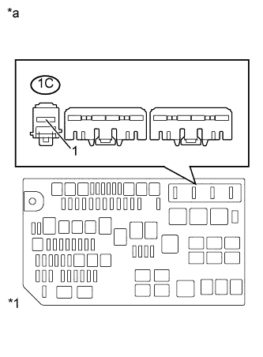
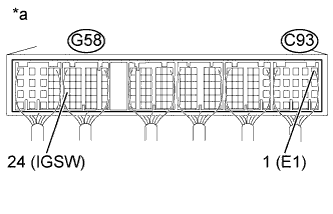

СИСТЕМА ECD (для моделей с DPF) > Цепь питания ECM |
| 1.ПРОВЕРЬТЕ ИНТЕГРИРОВАННОЕ РЕЛЕ № 1 (ИНТЕГРИРОВАННОЕ РЕЛЕ № 1 – МАССА) |
|  |
Извлеките интегрированное реле № 1 из блока реле моторного отсека.
Измерьте напряжение в соответствии со значениями, приведенными в таблице.
| Контакты для подключения диагностического прибора | Состояние | Заданные условия |
| 1C-1 - масса | Всегда | 11-14 В |
| *1 | Блок реле моторного отсека |
| *a | Вид спереди разъема со стороны жгута проводов: (к интегрированному реле № 1) |
Установите интегрированное реле на место.
|
| ||||
| OK | |
| 2.ПРОВЕРЬТЕ ИНТЕГРИРОВАННОЕ РЕЛЕ № 1 (EFI, EFI MAIN, IG2) |
Проверьте интегрированное реле № 1 (EFI) (Нажмите здесь).
Проверьте интегрированное реле № 1 (EFI MAIN) (Нажмите здесь).
Проверьте интегрированное реле № 1 (IG2) (Нажмите здесь).
|
| ||||
| OK | |
| 3.ПРОВЕРЬТЕ ECM (НАПРЯЖЕНИЕ НА КОНТАКТЕ IGSW) |
|  |
Отсоедините разъемы ECM.
Включите зажигание (IG).
Измерьте сопротивление в соответствии со значениями, приведенными в таблице ниже.
| Контакты для подключения диагностического прибора | Положение переключателя | Заданные условия |
| G58-24 (IGSW) - C93-1 (E1) | Зажигание включено (IG) | 11–14 В |
| *a | Устройство с подсоединенным жгутом проводов (ECM) |
Подсоедините разъемы ECM.
|
| ||||
| OK | |
| 4.ПРОВЕРЬТЕ ЖГУТ ПРОВОДОВ (ИНТЕГРИРОВАННОЕ РЕЛЕ № 1 – ECM) |
Проверьте жгут проводов между ECM и интегрированным реле № 1.
Отсоедините разъем ЭБУ.
Извлеките интегрированное реле № 1 из блока реле моторного отсека.
Измерьте сопротивление в соответствии со значениями, приведенными в таблице ниже.
| Контакты для подключения диагностического прибора | Состояние | Заданные условия |
| G58-11 (MREL) - 1B-2 | Всегда | Менее 1 Ом |
| G57-24 (+B) - 1B-8 | Всегда | Менее 1 Ом |
| G57-17 (+B2) - 1B-8 | Всегда | Менее 1 Ом |
| G58-24 (IGSW) - 1A-5 | Всегда | Менее 1 Ом |
| Контакты для подключения диагностического прибора | Состояние | Заданные условия |
| G58-11 (MREL) или 1B-2 - масса | Всегда | 10 кОм или более |
| G57-24 (+B) или 1B-8 - масса | Всегда | 10 кОм или более |
| G57-17 (+B2) или 1B-8 - масса | Всегда | 10 кОм или более |
| G58-24 (IGSW) или 1A-5 - масса | Всегда | 10 кОм или более |
Подсоедините разъем ECM.
Установите интегрированное реле № 1.
|
| ||||
| OK | ||
| ||
| 5.ПРОВЕРЬТЕ ЖГУТ ПРОВОДОВ (ЭБУ РАСПРЕДЕЛЕНИЯ ПИТАНИЯ – ИНТЕГРИРОВАННОЕ РЕЛЕ № 1) |
Снимите ЭБУ распределения питания.
Извлеките интегрированное реле № 1 из блока реле моторного отсека.
Измерьте сопротивление в соответствии со значениями, приведенными в таблице ниже.
| Контакты для подключения диагностического прибора | Состояние | Заданные условия |
| G50-8 (IG2D) - 1A-1 | Всегда | Менее 1 Ом |
| Контакты для подключения диагностического прибора | Состояние | Заданные условия |
| G50-8 (IG2D) или 1A-1 - масса | Всегда | 10 кОм или более |
Установите ЭБУ распределения питания.
Установите интегрированное реле № 1.
|
| ||||
| OK | ||
| ||